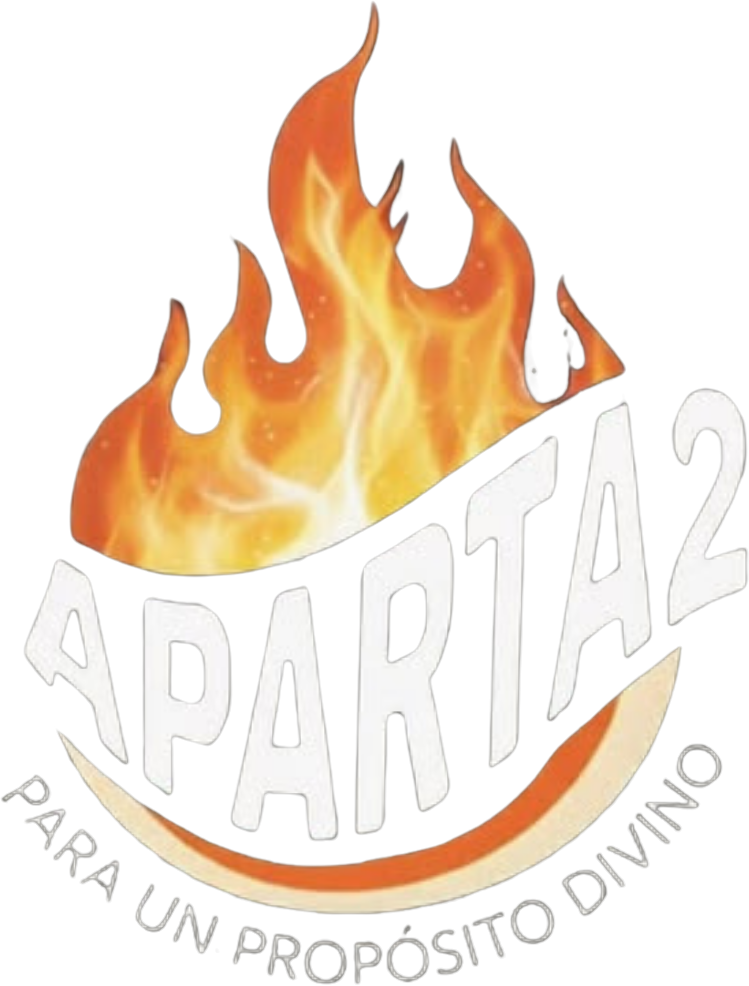

Palabra viva
Mensajes y estudios bíblicos pensados para la realidad de los jóvenes, con tiempo de reflexión personal.

Retiro Espiritual de Jóvenes · Iglesia Adventista del Séptimo Día
Un fin de semana lejos del ruido para encontrarte con Dios, con tu identidad y con una generación que arde por el mismo propósito.
El Encuentro
Aparta2 nace de un llamado: "apartaos para mí". Durante tres días caminamos juntos hacia una experiencia real con Jesús, donde la Palabra, la adoración y la comunidad transforman la manera en que vivimos.
Mensajes y estudios bíblicos pensados para la realidad de los jóvenes, con tiempo de reflexión personal.
Noches de alabanza con banda en vivo, cánticos nuevos y momentos de adoración profunda.
Grupos pequeños, dinámicas de integración y amistades que continúan después del retiro.
Experiencias
Banda en vivo, coros de la iglesia y espacios de adoración espontánea alrededor del fuego.
Juegos de integración, gimkanas y desafíos que rompen el hielo y unen al grupo.
Caminatas, fogatas, deportes y tardes de recreación al aire libre para recargar energía.
Devocionales al amanecer, oración intercesora y un altar personal donde Dios habla.
Identidad, propósito, relaciones sanas y liderazgo con una mirada bíblica.
Actividades de servicio y misión para llevar el propósito divino más allá del retiro.
Programa
Registro
Los cupos son limitados y se confirman por orden de inscripción. Completa la tarjeta de registro y el equipo te contactará con los detalles.